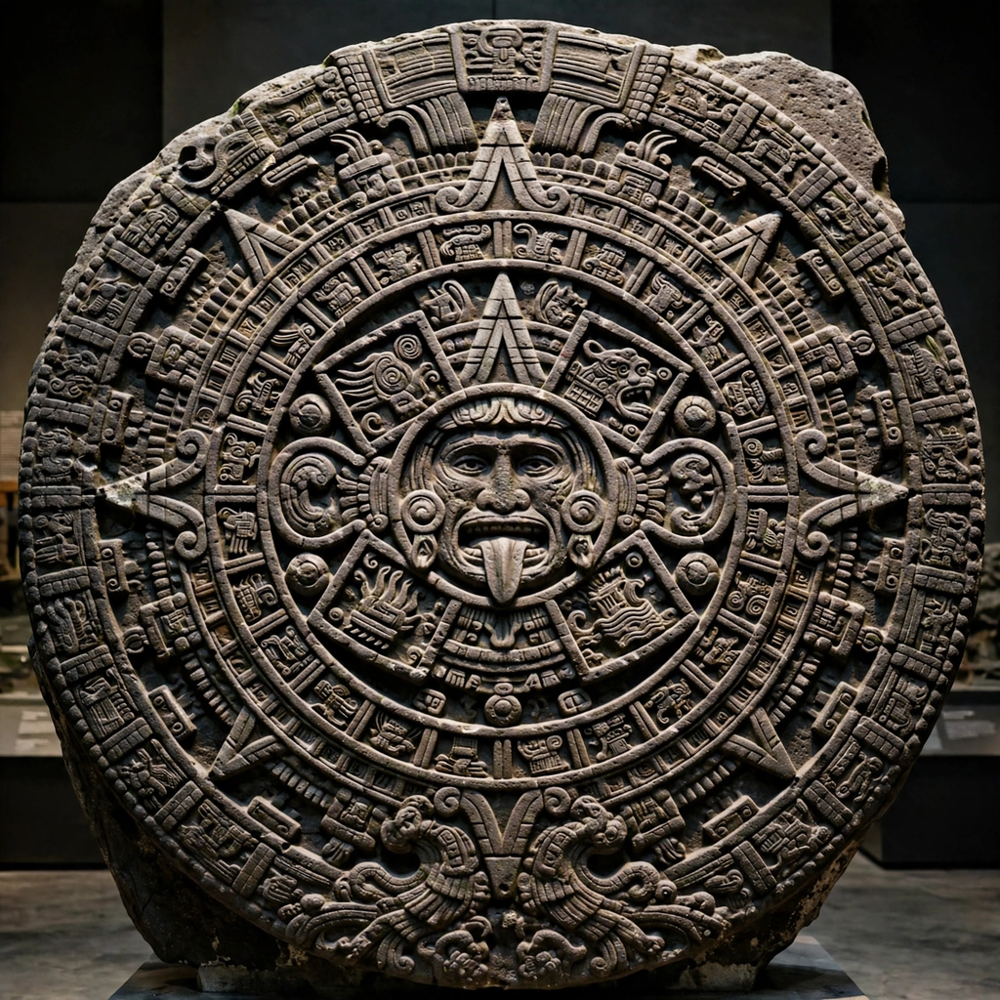

| Aztec calendar | |
|---|---|
| Culture | Mexica (Aztec) |
| Components | Xiuhpohualli (365-day year count); Tonalpohualli (260-day ritual count) |
| Cycle | 52 years (Calendar Round) |
| Famous artifact | Aztec calendar stone (Sun Stone) |

The Aztec calendar is the calendrical system used by the Mexica (Aztec) people of central Mexico and their neighbours. Like other Mesoamerican calendars, it combines a 365-day solar-agricultural cycle with a 260-day ritual cycle; the two interlock to produce a 52-year "century" known as the Calendar Round.
The xiuhpohualli ("year count") divides 365 days into eighteen months of twenty days, plus five residual days, the nemontemi, considered unlucky. The tonalpohualli ("count of days/destinies") runs 260 days, formed by combining thirteen numbers with twenty named day signs (Cipactli, Ehecatl, Calli, Cuetzpalin, Coatl, and so on). Each day in the tonalpohualli had divinatory significance, consulted at birth for a child's fate and name, and priests — keepers of the tonalamatl almanacs — read it to time ceremonies, marriages, and war.
Because 260 and 365 share a common measure, a given paired date recurs only once every 52 years. The close of each 52-year bundle of years was a moment of cosmic dread: all fires were extinguished, and at the New Fire ceremony on the Hill of the Star, priests watched the Pleiades; when the stars crossed the zenith, a new fire was drilled on a victim's chest and carried throughout the land, renewing the world for another cycle.
The so-called Aztec calendar stone is a colossal basalt disc, 3.6 metres across and weighing some 24 tonnes, carved in the late Aztec period and rediscovered in 1790 beside Mexico City cathedral. Its rings encode the day signs and eras of Aztec cosmology — the five suns — but it was likely a sacrificial or ceremonial platform (temalacatl or cuauhxicalli) rather than a working calendar. It should not be confused with the distinct Maya calendar used by the Maya peoples to the east.